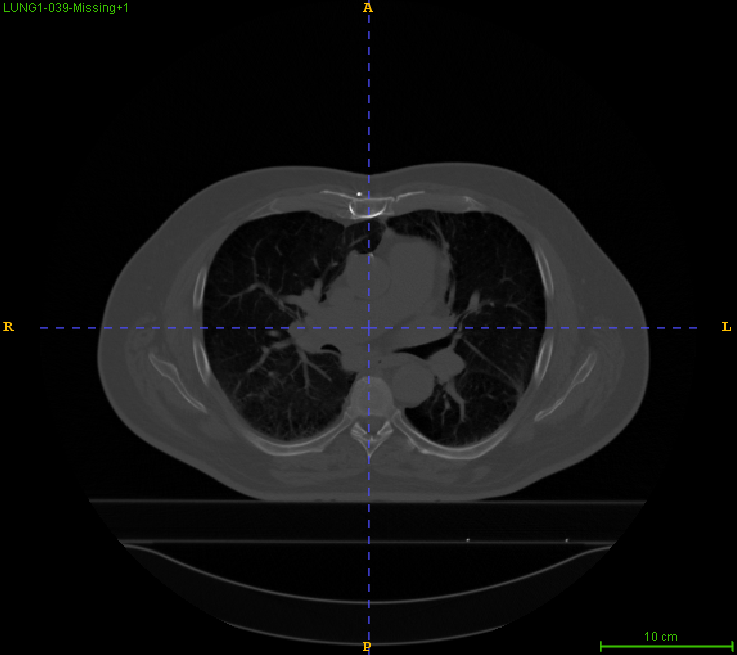

import vtk
import numpy as np
import tempfile
import SimpleITK as sitk
from pprint import pprint
# Create a fake image with simpleitk
image = sitk.Image(28, 28, 28, sitk.sitkUInt8)
image.SetSpacing([0.5, 0.1, 0.2])
# Set directio to:
# [1, 0, 0]
# [0, 0, 1]
# [0, 1, 0]
image.SetDirection((1., 0., 0., 0., 0., 1., 0., 1., 0.))
# Write this dummy image for VTK to read
with tempfile.TemporaryDirectory() as f:
sitk.WriteImage(image, f + "/temp.nii.gz")
# read it back with vtk
reader = vtk.vtkNIFTIImageReader()
reader.SetFileName(f + "/temp.nii.gz")
reader.Update()
header = reader.GetNIFTIHeader()
vtkimage = reader.GetOutput()
print("ITK: ")
pprint(np.asarray(image.GetDirection()).reshape(3, 3))
print("VTK: ")
print(vtkimage.GetDirectionMatrix())Stochastic - Particle Filtering and Markov Chain Monte Carlo
DICOM
NIFTI
image orientation
vtk
itk
Background
Directions and orientation of medical images are indeed a very confusing problem, especially when you are trying to handle multiple images (then relative spacing becomes a concern). There are also multiple conventions to view these image (e.g. neurologist view and radiologist view, which defines the righthandness of the image), adding further confusions to the problem.
For most volume storage format, a list of the most important components which defines a meaning image would be:
Voxel data
Image Origin
Image Spacing
Direction
These data are usually stored separately to maximize storage efficiency. Voxel data is always along Euclidean xyz-axises, which might not accurately represents the actual physical location each pixel. For instance, imagine you gave a metal bar two CT scans, one with it aligned perfectly with the machine’s rotational axis, the second with it purposely tilted 60° from the axis. The most effective way to store these two image is obviously by drawing the grid with the z-axis along the bar so that the voxel data stored is actually identically. However, we need to account for the 60° tilt of the second bar, which is achieved by specifying direction of the image. Similar though experiment goes with image origin, you get the idea?
This post tries to give a simplified explanation and solution to this problem for ITK and VTK users.
Image Formats
We consider only two of the most commonly seen medical image format, namely NIfTI and DICOM images. These two image formats use different hierarchy to store the direction information. While NIfTI images use QForm matrix and SForm matrix to store direction information, DICOM images use the DICOM tag stating cosines of angles. This topic will be discussed in detail in later sections.
Image loading methods
Three loading methods are considered in this post:
Load as ITK image.
Load as ITK image then use convert to vtkImageData.
Load as vtkImageData.
Tabulating their characters w.r.t. image directions:
| Has Direction | Has Origin | Has Orientation | |
|---|---|---|---|
| ITK Image Loader | Yes | Yes | Yes |
| ITK to VTK | No | Yes | No |
| VTK Image Loader | No | No | No |
Defining Terms
Image Origin
Image origin is the position of the corner of the first stored voxel (i.e. index ijk = [0,0,0]). Which of the 8 corners depends on whether the image is righthanded or lefthanded, this give rise to the orientation definition.
Image Orientation
Image orientation refers to the specification of the three principle axis w.r.t. voxel index. First, we introduce a notion, +x means the x-coordinate increase with the first index i of the voxel., similar for +y and +z. A more common notion would be the permutation of six direction LR, SP and AP, e.g. RAI/LPS…etc. This, however, doesn’t defines the image xyz-axis yet since they can be along any directions. Therefore, we requires the definition of Image Direction.
Data Storage Format
DICOM Images
Image Origin
Image origin of DICOM image is stored in the DICOM tag “Image Position (Patient) (0020,0032)”, which is a simple offset against all the voxel coordinates. Note that each slices has it’s own value of Image Position, but we only concern the first slice.
Image Direction
Image direction of DICOM image is stored in DICOM tag “Image Orientation (Patient) (0020,0037)”, it is defined as the cosines of angle of three axis. Every slice of the same series (except for scouts) should have the same orientation.
NIFTI
Image Origin
The image origin of Nifti files are stored in the quantity qoffsets and the fourth element of srow_x/y/z in the header. Usually, they are the same so you can just use one of them.
Image Direction
Image directions of Nifti files are defined by two matrices in the header, namely SForm Matrix and QForm Matrix, which, in most cases, are the essentially the same matrix except SForm Matrix includes the spacing . The usage of these two matrices are defined by two quantity called sform code and qform code, and the QForm Matrix is defined by a vector quaternion. According to the documentation, three methods are mentioned for using these matrices depending on whether the qform code and sform code are 0 or not.
Data Loading Strategy
DICOM
Generally DICOM can be seen as a series of 2D images with extra information stored in headers. However, an image can be sliced along different normals, for example sagital, coronal or axial. These three direction are not the only direction that a DICOM series can take on, in fact, a DICOM series can be sliced along any directions. The slice direction is decided by the “Image Orientation (Patient) (0020,0037)” DICOM tag, which specify the reference frame. The “Image Orientation(Patient)“ is a 6-element tuple consist of two vectors which describes the axis of the direction for row and column of that particular slice. For example, if your slices are Axial slice, then the two vectors defines sagital and coronal directions.
If the tag is “a“, then the cross product of the two vectors gives the third colume of the rotational matrix, i.e:
If the corresponding axis vectors will be
\[ \begin{align} \vec{v}_x &= \begin{bmatrix} a&b&c \end{bmatrix}^T \\ \vec{v}_y &= \begin{bmatrix} d&e&f \end{bmatrix}^T \\ \vec{v}_z &= \vec{v}_x \times \vec{v}_y \end{align} \]
NIFTI
To properly load the image data, we first examine the qform and sform code, that perform action according the the conditions below.
If qform = 0
This method is for backwards compatibility only. When qform code = 0, the matrices will not be used to define the orientation and direction, the index to coordinate matrix is simply the following:
\[ \vec{r} = \vec{s}^{\text{ }T} \cdot \vec{I}\ \]
where r is physical coordinate, s is spacing vector and I is the index vector (i.e. $ = [i, j, k] $). In this case, no further transformation is need after image loading (or the transform is Identity matrix).
If qform > 0
When qform code is greater than zero, this method applies. This method involves constructing a rotation matrix using a so called quaternion representation.
Definition of quaternion:
\[ \vec{q} =\begin{bmatrix} a\\b\\c\\d \end{bmatrix} \]
where we require that:
\[ a^2 + b^2 + c^2 + d^2 = 1\]
So having three of the four values gives the remaining one. In nifti format, only b, c, d are given in the header, and we calculate a by the formula:
$ a = $
Using a, b, c, d the rotational matrix R is defined as:
\[ \displaystyle \text{R}_q = \begin{bmatrix} a^2 + b^2 - c^2 - d^2&2bc - 2ad&2bd+2ac\\ 2bc + 2ad& a^2 + c^2 - b^2 - d^2& 2cd - 2ab\\ 2bd - 2ac&2cd + 2ab&a^2 + d^2 - c^2 - b^2\\ \end{bmatrix} \]
The index to physical position formula would therefore be:
\[ \displaystyle \vec{r} = \text{R}_q [\vec{s}^{\text{ }T}\cdot \vec{I}\] + \vec{q}_0\ \]
where q_0 stands for qoffsets.
Hence the affine matrix vtkMatrix4x4 used for transform in VTK would be
\[ \displaystyle \text{A} = \begin{bmatrix}\ a^2 + b^2 - c^2 - d^2&2bc - 2ad&2bd+2ac&q_x\\ 2bc + 2ad& a^2 + c^2 - b^2 - d^2& 2cd - 2ab&q_y\\ 2bd - 2ac&2cd + 2ab&a^2 + d^2 - c^2 - b^2&q_z\\ 0&0&0&1\ \end{bmatrix}\ \]
If sform > 0
This can coexist with qform > 0 (i.e. both qform > 0 and sform > 0 can coexist, qform describe the transformation from data to scanning grid, sform describe the transformation from data to standard grid). The sform matrix is stored separately in three vectors: SRowX, SRowY and SRowZ, which we will denote as: $ _x, _y, _z $.
\[ \displaystyle \text{R}_s =\begin{bmatrix}g_{x_1}&g_{x_2}&g_{x_3}\\g_{y_1}&g_{y_2}&g_{y_3}\\g_{z_1}&g_{z_2}&g_{z_3} \end{bmatrix} \]
Since the SForm matrix already include spacing, there are no needs to multiply spacing for each index. The index to physical position formula would therefore be:
\[ \displaystyle \vec{r} = \text{R}_s \vec{I} + \begin{bmatrix} g_{x_4}\\g_{y_4}\\g_{z_4} \end{bmatrix}\ \]
The affine matrix used for transform in vtkMatrix4x4 would then be the rotational matrix divided by spacing spacing vector s:
\[ \displaystyle\ \text{A} =\ \begin{bmatrix}\ \frac{g_{x_1}}{s_1}&\frac{g_{x_2}}{s_2}&\frac{g_{x_3}}{s_3}&g_{x_4}\\ \frac{g_{y_1}}{s_1}&\frac{g_{y_2}}{s_2}&\frac{g_{y_3}}{s_3}&g_{y_4}\\ \frac{g_{z_1}}{s_1}&\frac{g_{z_2}}{s_2}&\frac{g_{z_3}}{s_3}&g_{z_4}\\ 0&0&0&1\ \end{bmatrix}\ \]
Code Example (VTK & Python)
Output
ITK:
array([[1., 0., 0.],
[0., 0., 1.],
[0., 1., 0.]])
VTK:
vtkMatrix3x3 (0000025FBE641A50)
Debug: Off
Modified Time: 1319
Reference Count: 2
Registered Events: (none)
Elements:
1 0 0
0 1 0
0 0 1See how the two matrix are different? In fact VTK did not load the the direction into the matrix and therefore it remained as the default identity matrix.
Fix
#Spacing
s = image.GetSpacing()
s = np.array([s[0], s[1], s[2], 1])
#Origin (Set this to [0, 0, 0, 1] if you are using itkvtkConnector)
ori = np.array( [header.GetQOffsetX(), header.GetQOffsetY(), header.GetQOffsetZ(), 1])
'''Directions'''
# Use QForm matrix
if (header.GetQFormCode() > 0):
b = header.GetQuaternB()
c = header.GetQuaternC()
d = header.GetQuaternD()
a = np.sqrt(1 - b*b - c*c - d*d)
A = np.array([
[a*a + b*b - c*c - d*d, 2*b*c - 2*a*d, 2*b*d + 2*a*c, ori[0]],
[2*b*c + 2*a*d, a*a+c*c-b*b-d*d, 2*c*d - 2*a*b, ori[1]],
[2*b*d - 2*a*c, 2*c*d + 2*a*b, a*a + d*d - c*c - b*b, ori[2]],
[0, 0, 0, 1]
])
# Obtain user transform for vtk algorithms
mat = vtk.vtkMatrix4x4()
[[mat.SetElement(i, j, A[i, j]) for i in range(4)] for j in range(4)]
print("From qform: \n", mat)
# Use SForm Matrix
if (header.GetSFormCode() > 0):
gx = header.GetSRowX()
gy = header.GetSRowY()
gz = header.GetSRowZ()
# divide SForm matrix by spacing
gx /= s
gy /= s
gz /= s
A = np.zeros([4,4])
A[3, 3] = 1
A[0,:] = gx
A[1,:] = gy
A[2,:] = gz
# Obtain user transform for vtk algorithms
mat = vtk.vtkMatrix4x4()
[[mat.SetElement(i, j, A[i, j]) for i in range(4)] for j in range(4)]
print("From SForm: \n", mat)Output
From qform:
vtkMatrix4x4 (0000025FBEC509E0)
Debug: Off
Modified Time: 1478
Reference Count: 1
Registered Events: (none)
Elements:
-1 -0.000261643 0.000261643 0
0.000261643 3.42285e-08 1 0
-0.000261643 1 3.42285e-08 0
0 0 0 1
From SForm:
vtkMatrix4x4 (0000025FBEC4FF40)
Debug: Off
Modified Time: 1484
Reference Count: 1
Registered Events: (none)
Elements:
-1 0 0 0
0 -0 -1 0
0 1 0 0
0 0 0 1 Now if you round them up, you can see how this is corrected, but the x-axis and y-axis are now inverted. THis is because vtk and itk has inherently different orientation. While ITK defaults image to RAI orientation (Medical image convention), VTK defaults image to LPI (Computer graphics convention). Specifically, if you look at MRI images, the structures one the right actually belongs to the left side of the patient, as if the patient is standing facing the viewer. Knowing these subtle different would help to figure why the orientation is always messed up if you use VTK and ITK interchangibly.

Reference
- Aerts, H. J., Velazquez, E. R., Leijenaar, R. T., Parmar, C., Grossmann, P., Carvalho, S., Bussink, J., Monshouwer, R., Haibe-Kains, B., Rietveld, D., Hoebers, F., Rietbergen, M. M., Leemans, C. R., Dekker, A., Quackenbush, J., Gillies, R. J., & Lambin, P. (2014). Decoding tumour phenotype by noninvasive imaging using a quantitative radiomics approach [Article]. Nat Commun, 5, 4006, Article 4006. https://doi.org/10.1038/ncomms5006